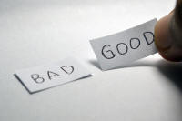

Markedness


Marking something means distinguishing it in some way. For
example, when you put a cross by your preferred candidate's name in an
election, you will be understood as voting only for that person and
not for any other candidate. The other candidates remain
unmarked by general consensus. That is one way the world
works.
By the same token, you will assume that driving straight ahead on a
road is permitted unless and until a specific sign or road marking
alerts you otherwise.
 |
Markedness in languages |
Markedness in linguistic terms is a slightly more difficult
concept and one surprisingly absent from teacher handbooks and
pedagogical grammars, despite its importance. The phenomenon
of markedness crops up in many areas of language analysis as the
longish list of related guides at the end shows.
In languages, the theory is that some features are simple and
prototypical so they are referred to as unmarked but others are
distinguished or marked in some way. For example, we do not
usually suggest that house is the singular of houses
but rather that houses is the plural of house.
The plural form is marked (in this case by the '-s' suffix)
but the singular is unmarked. That is the normal way plurals
are formed in English.
 |
Other languages do things differently and may mark a dual
form as well as singular and plural forms (e.g., some
varieties of Arabic).
Vestiges of the Old English dual form can still be seen in
the Modern English use of both and neither
to designate two and only two entities. In this sense,
the terms are marked for duality. Languages will, also, differ in the way the marked form is distinguished (or not) from the unmarked form and in what is considered marked and what is unmarked as we shall see. |
 |
Implications for teaching and learning |
There are important implications and you might like to think what they are before clicking here:
- Markedness (or its lack) has been cited as a predictor of
the difficulty that is inherent in learning a language.
Unmarked items are, in this analysis, easier to acquire than marked forms specifically because of their prototypical nature.
A simple example:
The word lion in English is unmarked so can apply to either a male or female animal so, when someone says:
There's a lion behind you
we will not normally be concerned to worry about the animals sex.
On the other hand, the word lioness is marked for sex and we are unlikely to hear:
There's a lioness behind you
Many learners of English will find it simple to learn the word lion but may never learn (or instantly forget) the marked form lioness. - The notion of markedness has also been invoked to explain the
order in which language items (whether in first or second
language(s)) are acquired, with marked items acquired (or
learned) later
than unmarked ones. In other words, unmarked items are
simply easier to learn (and often simpler).
A simple example:
In English, the present tense of a verb is often indistinguishable from its base or stem so, for example, most learners find it easy to say something like:
I work in London
because the verb is not marked for tense or person and is the same as the stem. However, most teachers will tell you that the marked form:
She works in London
is often not consistently produced by many learners up to C1 level. - If a language item or structure is unmarked in a learner's first language, it will be the first-choice form for that learner in a second or subsequently acquired language. Examples will follow in due course.
- If we understand how our learners' first language(s) handle markedness, we are in a good position to predict what will cause the greatest difficulty and design or amend our teaching programme accordingly.
- If we consider some errors produced by our learners in the light of the variation in markedness conventions across languages, we will be better able to explain them and better able to deal with them constructively. Some of these errors in markedness may not be immediately apparent, because the learners' production is grammatically accurate but pragmatically and semantically skewed.
 |
Some examples of markedness |
In what follows, we are discussing marked and unmarked categories in English. There is no guarantee, of course, that these features will be parallelled in any other languages. In fact, the way to bet is that they won't be.
 |
Nouns |
Number
We have seen that the plural forms of nouns in English are usually
marked with -s or -es (with often a small spelling adjustment) as
in, e.g.,
class → classes
bag → bags
pony → ponies
etc.
or they are irregular and make internal changes as in, e.g.,
foot → feet
mouse → mice
or both as in, e.g.,
wolf → wolves
calf → calves
etc.
(This, by the way, is an example of something called apophony and it
occurs much more routinely in other languages, such as German.
You may see it called ablaut, vowel mutation, internal modification,
stem modification or mutation, internal inflexion and a range of
other more or less hideous names. Simply, it means an internal
alteration to a word to show number, case, person or tense.
Modern English makes more use of external alteration in the form of
prefixes and suffixes but many irregular verbs, pronouns,
determiners and plural forms are still modified for tense, case and
number through internal changes.)
In all cases, the marked form is the plural.
A few nouns, usually referring to animals, are unmarked in the
plural form:
sheep → sheep
deer → deer
etc. but that does not mean they don't have a plural, of course.
|
|
Some languages, such as Japanese and Malay, for example,
have a tendency not to mark number at all. In these
languages, no marking on the noun does not indicate
singularity or plurality but is indeterminate regarding
number. Hungarian, too, will not mark plurality if it
is clear that a plural is meant, e.g., by a numeral.
Czech, too, does not usually mark plurality for quantities
above five. Slightly more rarely, some languages will not mark the plural on certain classes of noun which are seen as inherently plural and will reserve marking for the singular form of these nouns. In Welsh, for example, the unmarked form for feathered flyers is adar which refers to a flock of birds. The singular is in this case marked as aderyn, a bird. In Slavic languages plurals may be unmarked because some items are considered always in the mass. In Russian, for example, gorokh [горох] refers to the vegetable peas in a mass whereas goroshina [гороховый] refers to a single pea and is marked for the singular. Some languages, notably Ancient Greek, Old English and Sanskrit, marked dual number as well as singular and plural and the tendency survives in some modern languages, Slovenian, Sorbian and Scottish Gaelic, for example. Vestiges of the Old English dual marker can be seen in words such as both which can only apply to two items and parallel relics of the dual forms may be seen in many other languages. The general rule is still that the marked form will not be the singular but that is not completely universal and the range of ways in which non-singularity is marked (if at all) is quite wide. Affixation, as in English usually, is just one of them. |
Gender
Some nouns in English are marked for gender, usually but not
invariable for the feminine with -ess, so while it is
perfectly possible to have, e.g.,
a female lion
a male lion
a female tiger
a male tiger
etc.
it is not possible to have
*a male lioness
*a male tigress
etc.
In a few cases, the female form is still marked but not obviously so
from the morphology so
a female dog
is acceptable but
*a male bitch
is not.
Some nouns are marked morphologically for the male gender but these are rarer,
e.g.,
bride (unmarked) – bridegroom (marked for
male)
widow (unmarked) – widower (marked for
male)
nurse (unmarked) – male nurse (marked for
male)
Some nouns are unmarked in form (but marked in meaning) so we cannot look at the word and decide
on its gender from the morphology so noun pairs such as
brother – sister
niece – nephew
nun – monk
etc.
are not morphologically marked for gender; they are simply different words
with different meanings.
The marked form for many nouns is falling out of favour as the
perception of gender inequality grows so terms such as
actress
hostess
stewardess
etc.
are becoming ever rarer. Certain forms are, nevertheless, resistant to
fashion and it seems likely that, e.g., the distinctions between:
duke – duchess
count – countess
emperor – empress
king – queen
etc. will be retained in the language.
Many nouns, previously marked for male and ending in -man /
-men or a female ending with -woman / women are giving
way to unmarked forms so words like
policeman
fireman
airman
are now more conventionally rendered as:
police officer
fire officer
pilot
and so on.
However, some -man / -men endings are still retained in the
language because no obvious replacement marked for female or
unmarked is available so we still see, e.g.:
highwayman
infantryman
midshipman
middleman
ombudsman
although in some cases, a feminine marked ending may be substituted
so we see, e.g.:
fisherwoman
yachtswoman
helmswoman
jurywoman
In other cases, this is not fully possible and sometimes dubiously
acceptable so, although we do see, e.g.:
spacewoman
huntswoman
camerawoman
backwoodswoman
workwoman
and so on, not everyone, or all spell-check programs, will accept
all of these.
(Gender marking in English is unpredictably inconsistent (as it is
in many languages but not all by any means). There is, for
example, no obvious reason for the non-occurrence of nouns such as
guestess, criminaless, buildess and so on.)
|
|
Other languages work differently so, for example, while the word
cousin is unmarked for gender in English, there are
separate terms in many languages for female and male cousins.
Equally, terms such as grandfather in English are not
marked for whether the reference is to one's mother's father or
father's father (although it is marked for gender) but in other
languages separate terms exist for the relationships. The same
considerations apply to many other kinship terms. In some languages, the first-person pronoun is marked for gender so will vary depending on the gender of the person speaking / writing. |
Size
English frequently marks nouns for size (as do many languages, but differently, of course and in some cases [e.g. Modern Greek and German] much more frequently). There are two ways to do this:
- Smallness: marking with a diminutive
So we have the unmarked:
kitchen
cigar
book
chip
hill
and the diminutively marked
kitchenette
cigarette
booklet
microchip
hillock
etc. - Largeness: marking with an augmentative
English has, for example, the unmarked:
byte
market
inflation
and the marked forms:
megabyte
supermarket
hyperinflation
|
|
Most other languages have parallel forms but the details vary. Germanic languages deploy suffixes for diminutives and prefixes for augmentatives for the most part but Romance and Slavic languages rely heavily on suffixes for both markers. |
For more, see the guide to nouns linked in the list of related guides at the end. There is also some consideration in the guide to word formation, also linked below.
 |
Pronouns and possessive determiners |
Pronouns, in English, are marked in four ways:
- For number, e.g.:
I vs. we
he vs. they
etc. - For gender, e.g.:
she vs. he - For person, e.g.:
me vs. your vs. their
etc. - For case, e.g.:
I vs. me vs. my vs. mine
you vs. your vs. yours
etc.
The English system for markedness in pronouns and possessive determiners is notably defective however, having no plural form for the third person you or any distinction for gender with they and so on.
|
|
Other languages have much more complete and complex systems and may also include
markers for polite forms (with the familiar being the unmarked) and
may distinguish gender in the first person. Japanese,
famously, has a fiendishly complicated pronoun system in
which formality and number along with gender (but not case)
are marked in various ways. Many languages, including Cantonese, French, Bulgarian, Italian, German and a host of others, distinguish between you plural and you singular. English is, in fact, unusual in not doing so. Many of these languages will also distinguish between you as a plural denoting females and you denoting more than one male. Mixed-gender groups, as is the way of things, are usually, not invariably, denoted by the plural for males. Other languages, such as Korean, have a very reduced pronoun system with Korean, in particular, having no pronoun for third-person entities so the repetition of names or titles is commonplace where it would be stylistically unacceptable in most languages. To add complications, some languages, such as Vietnamese and other East-Asian languages, have different plural forms of the first person to indicated whether the addressee is included or not (i.e., a different form for we excluding you and we including you) and also to indicate assumed or real social status. |
Sexist marking

It is increasingly difficult in English to get away with using a
third-person pronoun which is not marked. In less sensitive
times, the unmarked form of the singular, third-person pronoun was
almost invariably he, him, his with she, her, hers only used to mark
gender. So sentences such as:
When a new student arrives, he may feel a bit lost
were common enough and understood to be unmarked for gender but are now superseded by, e.g.:
When new students arrive, they may feel a bit
lost
(because English conveniently does not mark the plural form for
gender as many languages do)
or even the grammatically challenged:
When a new student arrives, they may feel a
bit lost.
The lack of an unmarked pronoun form in English has led to a good
deal of heart searching and avoidance strategies by authors who do
not wish to offend the grammatically or culturally sensitive.
It has also led, for example, to the use of morphologically
questionable substitutes such as themself as an unmarked
reflexive pronoun.
For more, see
the guide to personal pronouns or the guide to gender linked in the list of related guides at the end.
This is a complex and controversial area.
|  |
Adjectives and adverbs |
Although English does not mark adjectives or adverbs for number, case or gender (as very many languages do), the language does have marked and unmarked forms of adjectives and adverbs.
So the natural unmarked forms are as in, e.g.:
How often do you come?
How old is your brother?
Is the food good here?
How long is the journey?
rather than the marked forms as in
How seldom do you come?
How young is your brother?
Is the food bad here?
How short is the journey?
which are all premised on the speaker's a priori assumptions about frequency, age, quality
and length, respectively.
Any adjective or adverb which has a negating affix will, usually,
be the marked form. So, e.g.,
imperfect
unreliable
unfashionable
hopeless
are all marked forms and asking
How imperfect / unreliable / unfashionable / hopeless is
it?
presupposes that something or someone is not perfect, reliable,
fashionable or hopeful.
Adjectives are, also, marked morphologically or by the use of
periphrastic constructions for degree so we have the base form (or
positive) unmarked and the comparative and superlative forms marked
for degree. For example:
big-bigger-biggest
far-further-furthest
enjoyable-more enjoyable-most enjoyable
comfortable-more comfortable-most comfortable
interesting-more interesting-most interesting
etc.
For more, see the guide to adjectives linked in the list of related guides at the end.
 |
Verbs |
English is again somewhat unusual in the ways verbs are marked.
- For person and number:
Apart from the deeply irregular verb be (which is inconsistently marked for person and number in both the present and the past), and the verb have (which is marked in the present only for number and person), English only marks the third person singular (with -s) in the present:
we drive → he drives
etc.
In the past tenses, there is no distinction for person or number so all forms (bar the past of be, which is marked, albeit inconsistently for number) appear unmarked:
I / you / he / she / it / we / you / they / drove.
The lack of inflexion for person and number results in some circumlocution in English with expressions such as:
Both of you left too early
which, in other languages, are unnecessary because the pronoun is marked for number. - For tense:
The marked form for the past tense is, regularly, the -ed or -d suffix, of course, but there are some 650 irregular verbs which are marked (or not) in different ways (often with a vowel alteration (apophony) or a consonant change / addition).
Unusually, English does not mark a verb for other tenses although there are changes to form past participles. - For aspect:
English uses a periphrastic form to make perfect aspects, leaving the verb only marked for past participle as in, e.g.:
He has finished
They have fallen
Confusingly for many, English marks a range of aspects with a single form, the -ing ending. For example:
He's been talking for ages (durative aspect)
I was calling on and off all morning (iterative aspect)
He's writing a new play (progressive aspect)
The weather is getting cold (continuous aspect)
and marks the verbal noun or gerund in the same way:
His writing is appalling - For interrogatives, emphasis and negatives:
English is again unusual in using an operator to mark past simple and present simple questions and negatives with do as in, e.g.:
Do you know the time?
I don't have a watch
Did you see that?
I don't believe it
etc.
The operator is also available in English to make a statement emphatic as in, e.g.:
I do think that's true
I did want to come
etc.
and that sort of emphatic form is not available in other languages, either, being replaced by intonation or punctuation markers. At lower levels in particular, learners may miss the emphatic intention of the speak altogether.
|
|
Person and number: Inflecting languages, such as French, German, Italian etc. will, to greater or lesser degrees, mark person and number in the present, past and future forms. They may also mark formality. Aspect: Languages often reserve distinct markers for the aspects discussed above (and others) so the verb forms for continuous, iterative, durative and so on aspects will vary accordingly. Learners may well be confused by the fact that the English -ing form represents a range of aspects and, incidentally, the verbal noun or gerund. Tense: Learners whose languages routinely distinguish between a tense marker and a participle marker may be confused by the fact that the participle and the past tense share a form in regular verbs (and many irregular ones) in English. Interrogatives and negatives: Many languages rely on word order or only on intonation and punctuation to form questions and will often form negatives with a single, simple particle of some kind, such as nicht in German or then in Greek. French is unusual in using a double marker (ne ... pas) for the negative. |
 |
Word order and syntax |
There are quite rigid rules for ordering items in English which, when broken, may signal a marked proposition.
Theme and rheme
In many cases, the examples which follow have to do with raising
an element of a proposition to the theme position in English.
There is a separate guide to theme and rheme on this site, linked
below, so brief definitions and a single example will serve here.
The theme of any clause or sentence is the jumping off point and
what follows is the rheme which expresses what happened to the theme
or what the theme did.
If we take a usual active sentence such as:
Harriet fixed my computer
we have the theme, Harriet, followed by the rheme,
repaired my computer.
The theme is the point of departure for the rest of the sentence.
In texts, the rheme will often form the theme of the next clause
which might be:
and it works much faster now
in which it (my computer) is the new theme.
However, if we form the passive-voice sentence:
My computer was fixed by Harriet
we have raised My computer to the theme position and
what follows, was fixed by Harriet, is the rheme. The
next theme is more likely to concern Harriet than my
computer:
who has a shop in the High Street
In other words, by choosing an active or passive voice
formulation, we have marked either Harriet or my
computer as the point of departure for what follows in the
text.
Usually, in English and most other languages, the active sentence is
the most frequent form and is considered unmarked. The passive
is a marked form.
- English differs from many languages in not having markers
for case so the ordering of constituents of clauses is marked
instead.
It has this in common with other languages which also have
isolating tendencies, such as the Chinese languages.
In English, the distinction between:
The problem caused the long delay
and
The long delay caused the problem
is only made clear by the ordering of Subject, Verb and Object. This is because the canonical, i.e., expected and usual, ordering is Subject – Verb – Object (if any).
Other, more obviously inflecting languages, will signal the relationship between the noun phrases by alterations to the determiners or other changes. The unmarked form in each case, whether signalled by morphology or word ordering is the nominative or subject case.
Departures from canonical word order are always marked so the distinction in emphasis between, e.g.:
This book I want to read
and
I want to read this book
is marked by the unusual word ordering in the first case.
Another way of seeing this is to note that the object in the first example has been raised to the topical theme position and that, in English, often marks it. - Other items can also be moved in English to express markedness of some
form. For example:
I seldom go to London
is an unmarked utterance, but
Seldom do I go to London
is marked for emphasis by both the ordering of items and structural changes.
Cleft sentences such as:
What she liked most was the hotel
also signal markedness and emphasis.
Fronting of adverbials such as in:
On your desk you will find the book you need
also signal markedness of some form.
For more, see the guides to cleft sentences and fronting, both linked in the list of related guides at the end. - End weighting:
The general rule in English is that more complex and longer phrases are placed towards the end of the sentence so we prefer:
The train was delayed by the heavy and persistent snow which fell overnight and froze the tracks
to
The heavy and persistent snow which fell overnight and froze the tracks delayed the train
which sounds odd to a native-speaker's ear although it is grammatically faultless.
If a speaker, however, deliberately chooses to break the end-weighting rule, the utterance becomes more marked. In the second case above, the speaker has chosen to mark, i.e., emphasise, the weather rather than the train's delay. - End focus:
Another general tendency, in English, is to place new or important information at the end of an utterance so we have exchanges such as:
I always walk my dog in the park near the river
Is that the park with the beautiful cherry trees?
Yes, they are lovely in the spring when the blossom is out, aren't they?
in which the information at the end of each turn is picked up by the next speaker.
If, in this case, either speaker departs from the end-focus principle, the result is to lay special emphasis, i.e., to mark the utterance. Compare, e.g.:
The park near the river is where I always walk my dog
Does she go in the water much?
Yes, swimming is something she loves
in which the speakers are responding to each other's marking of utterances and, thereby, producing a very different sort of exchange because the first speaker sets the tone by marking the dog rather than the park and the second speaker marks the water as more salient than the dog, simply by placing the data at the end of the utterance.
End focus is also at work with the dative shift (or dative alternation) observable with ditransitive verbs. For example:
She sent me a letter ...
focuses on the direct object (a letter) and will naturally be followed by something like:
... and it explained the issue
whereas:
She sent a letter to me ...
focuses on the indirect object (me) and will more naturally be followed by:
... and I'll write back as soon as I can. - Anticipatory it- and there-clauses:
These are also called existential clauses in that they focus the hearer / reader on the existence of something important, i.e., they mark it. There is a separate guide to these linked in the list of related guides at the end so here a couple of examples of how English users choose to shift the important information to the end of a clause will be enough.
Instead of:
A fire in is the building
most native speakers would prefer:
There's a fire in the building
because where the fire is is more important than its simple existence. It is marked by end focus, in other words.
Similarly, instead of:
That John can't come is a shame
most speakers would prefer:
It's a shame that John can't come
The act of not shifting the phrase or clause to the end, of course, also constitutes a form of marking. - Passive voice:
We saw above with the example of Harriet and my computer that raising the object of a sentence to the patient position in a passive voice structure is a way to mark its importance by making it the theme of the clause.
It is not the case, therefore, that:
The boys told lies
and
Lies were told by the boys
are simply alternatives with the same meaning.
In the second, passive, clause, the speaker / writer is marking not the boys but the importance of the lies. This is even more obvious when, as is often the case, we omit the agent altogether and simply have:
Lies were told. - Cleft sentences:
Cleft sentences are another familiar way in which markedness is achieved. For example:
John brought Mary a book yesterday
is a simple unmarked form which can be marked for emphasis in a number of ways:
It was John who brought Mary a book yesterday
It was Mary whom John brought a book yesterday
It was a book that John brought Mary yesterday
It was yesterday that John brought Mary a book
What John brought Mary yesterday was a book
For more on the usually recognised seven forms of cleft sentences in English, see the guide linked at the end. - Non-finite subject clauses
Non-finite forms such as the gerund (-ing form) and the to-infinitive can be raised to the subject position of a clause and mark the item for special emphasis. For example:
Instead of:
John is the right man to ask about this
we may have:
The right man to ask about this is John
and, instead of
It would be a shame to miss the party
we may have:
To miss the party would be a shame
or
Missing the party would be a shame
and instead of:
I enjoy doing crosswords
we may have:
Doing crosswords is something I enjoy - Adverb ordering:
A number of adverb classes in English customarily appear in medial position in clauses (which often means between the auxiliary and main verbs):
Time (frequency):
They have frequently questioned the wisdom of that
Degree:
I have really enjoyed meeting you
Certainty:
I definitely won't speak to her
Manner:
She carefully drove the car into the garage.
Shifting these adverbs either to the front for emphasis or to the end, giving them more weight, produces marked utterances such as:
Frequently, they have questioned the wisdom of that
They have questioned the wisdom of that frequently
Really, I have enjoyed meeting you
Definitely, I won't speak to her
Carefully, she drove the car into the garage
She drove the car into the garage carefully
So, just telling learners that certain adverbs can be placed in alternate positions is not doing them a service unless the markedness result is made clear. -
Prepositional phrases:
Where prepositional phrases are normally placed syntactically is not a simple matter as the guide to prepositional phrases linked in the list of related guides at the end, makes clear. Their normal, i.e., unmarked, position depends on the function they are performing.
However, when such phrases are marked, it is frequently in the interests of avoiding ambiguity.
For example, in the sentence:
I spoke to the man behind the bar
we can understand the phrase behind the bar in two ways:
behind the bar was where I spoke to him
or
behind the bar identifies the man I am speaking about
In the first case, the phrase is prepositional and tells us where I spoke to the man but in the second case, the phrase is post-modifying the noun man and tells us which man is in question. It could be rephrased as who was behind the bar. The object in the first case is the man and in the second case the object is the man behind the bar.
To avoid any misunderstanding, especially in writing because neither the insertion of a pause nor the placement of sentence stress which can help comprehension is available, users of English will often move the prepositional phrase so that we get:
Behind the bar, I spoke to the man
in which no ambiguity is evident but the prepositional phrase is marked by being fronted.
When the prepositional phrase is an adjunct very closely connected to the verb as in, e.g., a verb of movement and its destination or a prepositional verb, the prepositional phrase is rarely moved to the initial position unless some heavily marked meaning is intended:
Mary marked the house on the map
vs.:
On the map Mary marked the house
and
They jumped over the wall
vs.:
Over the wall they jumped
Finally, when a clause contains more than one adverbial adjunct prepositional phrase, they are usually ordered in relation to how closely connected they are to the verb phrase and its object, if any. So, for example, we get:
She spoke to him in French after dinner
rather than
She spoke to him after dinner in French
because the language she spoke in is more closely connected to the verb than the time she did the speaking.
Moving the prepositional phrase to any other position marks it in some way. Compare, for example:
He walked across the park in the rain
which is not marked because where he walked is more closely connected to the verb than the weather conditions, with
He walked in the rain across the park
in which the rain has become marked for special emphasis.
It goes, almost, without saying that moving the prepositional phrase rarely results in something unacceptable but learners whose first languages routinely place prepositional phrases in positions which are, in English, more marked, may inadvertently send a signal they do not intend.
These changes to canonical word ordering, weight and focus signal markedness
and, almost by definition, cause problems for learners whose first
languages operate differently (i.e., most of them).
For a little more on how we manage to mark what we deem important,
you can consult
the guide
to postponement and extrapositioning linked in the list of related guides at the end.
|
|
Case: Languages such as German, most Slavic languages and others which have case structures on nouns and determiners may exhibit freer word order because the subject and object (as well, often, as other relationships such as movement to or away and position) are indicated by the form of the lexemes and, whatever the ordering, it is always clear who did what to whom (and often where and in what direction). For example, in German the prepositional phrase on the table may be translated either as: auf den Tisch with the determiner den signalling movement towards the table or as auf dem Tisch with the determiner dem signalling static position. For more, see the guide to case linked in the list of related guides at the end. End weighting and end focus: These are not universals and many languages will not follow the principles. This often results in some quite unnatural production from learners who expect, for example, the topic to be fronted or the adverb to come initially in a clause. Learners whose first languages show topicalising tendencies (such as the Chinese languages, German and Spanish) may often produce language which, to a native English-speaker's ear appears marked when that may not be the speaker's intention so, for example, we get stylistic errors such as: Yesterday, I went to London which is marked for specific and important time, or Restaurants? I like Italian ones best which carries the marked topic. By the same token, the non-use of it- and there-clauses can also result in unnatural constructions which are grammatically accurate but unusual so native-speaker hearers may misinterpret the speaker's intentions, looking for why something appears to be marked. Many languages do not use parallel formulations and, even if they do, use them differently. For example, producing: That the train is late is a shame instead of It's a shame that the train is late or A party was in the hall instead of There was a party in the hall sends a different message concerning how the speaker intends to be understood. Adverbs: Adverb positioning is variable across languages so learners who choose to place the adverb where it would normally be in an unmarked clause in their first languages may unwittingly produce something clearly marked in English where no marking was intended. |
 |
Politeness marking |
|
|
English, as we have seen, does not have an available pronoun
which is marked for deference or politeness. Many European languages do have such pronouns as, for example, the distinctions in French between tu and vous or in German between du/ihr and Sie. This is the T-V phenomenon, named after the French distinction. A range of other languages, notably some East Asian ones, have very complex and sensitive ways of showing degrees of politeness and deference (or their opposites). Deliberately selecting the familiar, non-deferential form when the polite form would be conventional is one way users of these languages have of marking an insult or deliberate impoliteness. |
No such resource is available to (Modern) English users so
politeness is routinely expressed by making words into phrases and
phrases into clauses. For example:
Please open the door
and
Thanks
are unmarked for any special deference but
Could you open the door for me, please?
and
I'm really very grateful for your help
are both marked in this way.
It has been suggested and it seems intuitively reasonable, that the
lack of a T-V distinction in English has led to the development of a
very wide range of politeness-marked expressions whose use is subtle
and requires sensitivity if offence is to be avoided.
Over-polite expressions may be perceived as sarcastic or ironically
intended, for example.
In particular, naturally, many of these marked expressions are
commonplace in requests, offers and expressions of thanks or
acceptance.
 |
Phonological marking |
Stress:
We can add markedness to almost any utterance by
speaking more loudly or laying special emphasis on words or parts of
sentences. For example:
I went to London with my brother
would normally be spoken with the main stress on London as
this forms the core of the information and there may be another or secondary
stress on brother because that, too, may be heard as new information
because of its end position. However, if the
speaker lays special stress as in, e.g.:
I went TO London with my brother
(i.e., not from London)
or
I went to London with MY
brother (i.e., not someone else's brother)
then the sentences are being phonologically marked to signal the way
the speaker wishes to be understood.
Word stress, rather than sentence stress, can also be used to
mark items. For example, the verb export is stressed
on the second syllable but the noun is stressed on the first
syllable [/ˈɪk.spɔːt/ vs. /ɪk.ˈspɔːt/]. Additionally, the
vowel may be weakened when the stress falls on the second syllable
so we get, e.g., the word compound pronounced as /kəm.ˈpaʊnd/ as a
verb but as /ˈkɒm.paʊnd/ as a noun. There are around 150 more
pairs of this sort. (There's a list in the guide to word stress linked in the list of related guides at the end.)
Which form represents the marked one is less obvious but the usual
assumption is that the noun/adjective form is unmarked and the verb
is marked.
Consonants and vowels
There is, however, even more to it than that. Some
linguists have proposed, for example, that voicing of consonants is
a form of marking so, for example, /v/ is more marked than /f/, /b/
more than /p/ and so on.
For example, in English, the word wife is pronounced with
an unvoiced consonant [as /waɪf/] but the plural carries two voiced
consonants, /v/ and /z/ [as /waɪvz/], hence marking the plural.
If, indeed, marked forms are more difficult to acquire in a foreign
language, then we would expect some learners to produce the plural
as /waɪfs/ and that is, in fact what we often find. Even after
the /v/ sound has been acquired here, the result is often /waɪvs/.
The same considerations are said to apply to vowel sounds with,
e.g., a high, back vowel such as /u:/ being unmarked and a vowel such
as /ʌ/ (which is a low, central vowel) being more highly marked.
The implication is clear: we need to focus our teaching more on the
most marked sounds and can more safely assume that unmarked ones,
such as /p/, /t/, /k/, /s/ and /n/ will be less troublesome, because
they are common to most languages, than the
marked sounds /b/, /d/, /ɡ/, /z/ and /ŋ/, which occur less
frequently and are wholly missing from many languages.
Equally, the vowel sounds /æ/, /ʌ/ and /ɜː/ require more attention than /ʊ/, /ɒ/
and /iː/ as teachers of learners whose first languages do not have
the sounds can attest.
This is a somewhat speculative conclusion, in all honesty, but does
agree with some, albeit anecdotal, evidence.
Intonation
It has been asserted that falling intonation across an utterance
in English is more common than any other contour and it is certainly
true that simple declarative statements show this characteristic.
For example, the intonation contour on:
He went to the cinema in the evening
can be described as starting at a mid tone, rising slightly on the
key information (cinema) and then falling quite sharply, thus:

However, if the intonation changes to:

then the sentence sounds like an astonished, unbelieving question
and might have ??!! at the end and HE in bold
capital letters in writing.
Any deviation from the falling contour in English would, in this
analysis, constitute markedness.
It need not be so extreme as the example illustrated here, of course, as a simple rise at the end
denoting doubt or the emphasising of the word cinema would constitute a form of markedness of an interrogative or
special stress realised through intonation.
Even something as simple as keeping a level tone rather than falling
towards the end of a sentence is marked for the speaker's intention
not to be interrupted.
 |
Transferred negation |
The discussion of markedness would not be complete without reference to a singular peculiarity of English: transferred negation. For more on this, see the guide to negation in English linked in the list of related guides at the end. Here, a few examples will suffice.
In English, the following are unmarked in terms
of the assumptions made by the speaker and expectations aroused in
the hearer:
I don't think he's coming
I didn't believe he would agree
She didn't expect he would arrive early
I don't suppose you can help, can you?
In these cases, there is a logical problem: the wrong part of
the sentence is being negated. In other words, the negation is
transferred from the subordinate clause, where it logically belongs,
to the main clause. In the last example, the question-tag form
gives this away because a positive tag like can you?
should, normally, follow a negative clause so the speaker sees the
clause you can help as negative rather than positive.
That is deeply non-intuitive for many.
Some learners may even try to make the tag as do I? because
that would be the natural one to follow the negative main clause.
|
|
In other languages, no such transfer is possible or, when it is,
denotes some special markedness of the clause. Speakers of
these languages will naturally produce, then: I think he isn't coming which in English implies that it's only my opinion and others may differ I believed he wouldn't agree which in English implies that I was proved right She expected he wouldn't arrive early which in English implies that her expectation was fulfilled I suppose you can't help, can you? which suggests in English the speaker is expecting a negative response and in all these cases, in English, these are marked forms. The hearer is attuned to some form of markedness concerning the speaker's view of events in each case. These forms in some other languages are unmarked so a speaker of English as a Second Language may well send the wrong signals by not using transferred negation in English and raising unwarranted expectations in the hearer concerning the speaker's view of an event or situation. |
Try a short test on markedness.
| Related guides (there are lots of these – markedness is everywhere) | |
| nouns | for more on how nouns are marked (or not) |
| case | for more on how languages can ignore word ordering conventions without disturbing meaning |
| gender | for the guide to how gender marking is signalled across languages and in English, and how it may be avoided |
| word formation | for more on the marking of stems by affixation |
| personal pronouns | for a simple guide to the personal pronoun structures of English |
| adjectives | for the dedicated guide |
| prepositional phrases | for more on the normal (i.e., unmarked) position of prepositional phrases |
| cleft sentences | for consideration of it- and wh-clefts and more |
| fronting | for more on how fronting signals markedness |
| negation | for more on negation in particular and assertive / non-assertive forms |
| word order | for more on unmarked (canonical) word ordering in English |
| postponement and extrapositioning | to see how the principles of end-weight and end-focus affect what we mark as important |
| existential it- and there-clauses | for more on how users of English deploy it and there to shift the focus |
| infinitive | for more on infinitives as subjects |
| theme and rheme | for some detail concerning how the theme position (in English) contributes to markedness |
| the word order map | for links to guides which are often associated with issues of markedness (or it absence) |
| word stress | for more |